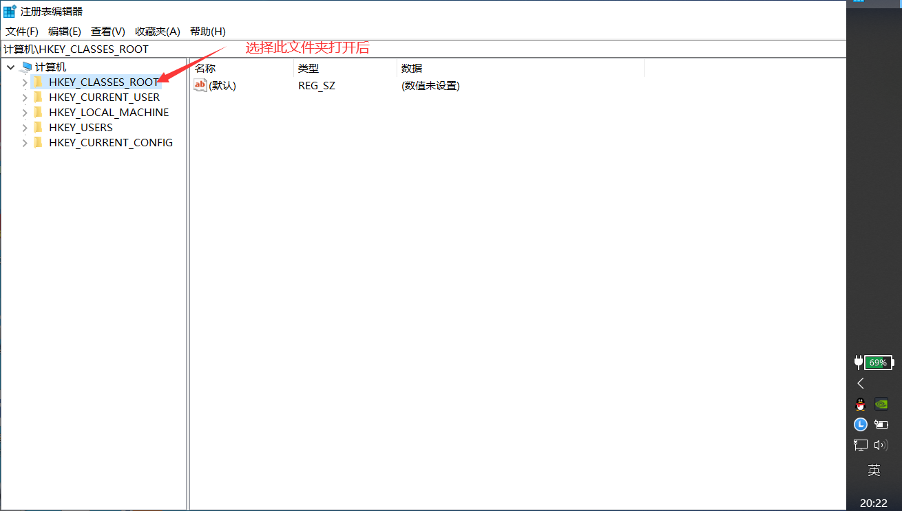
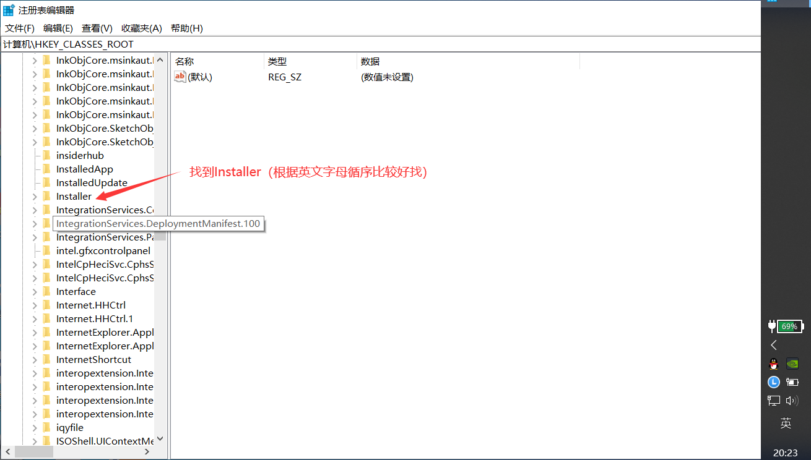
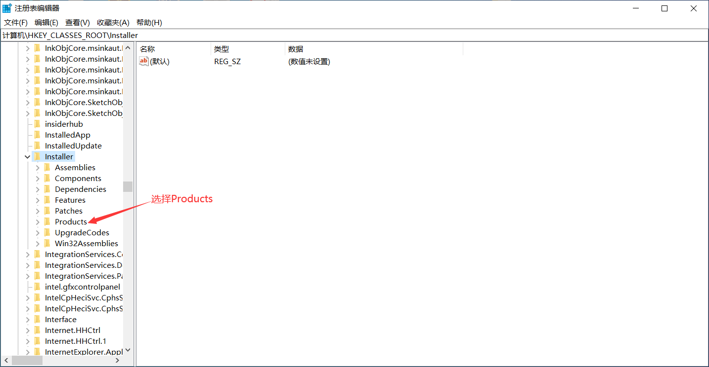
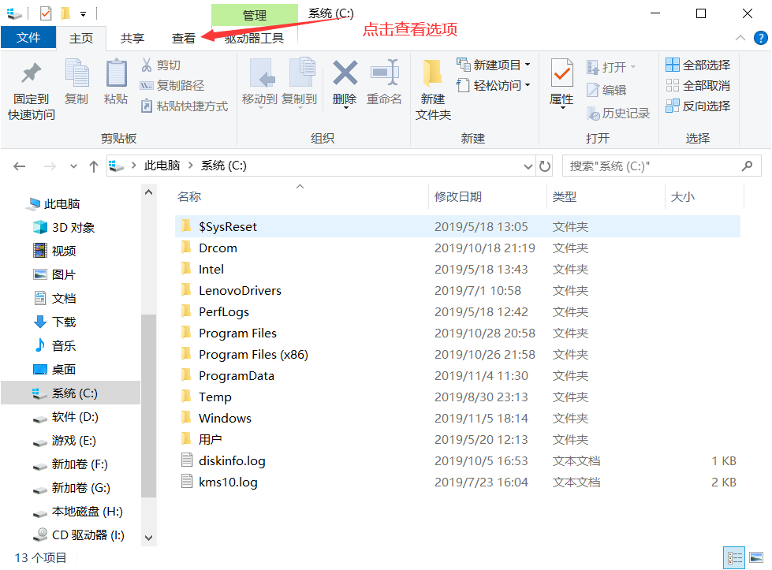
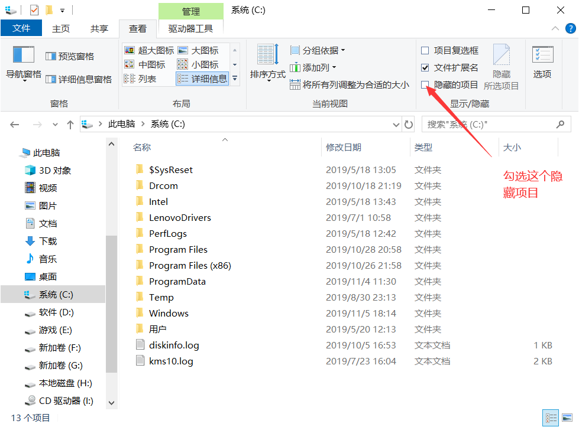
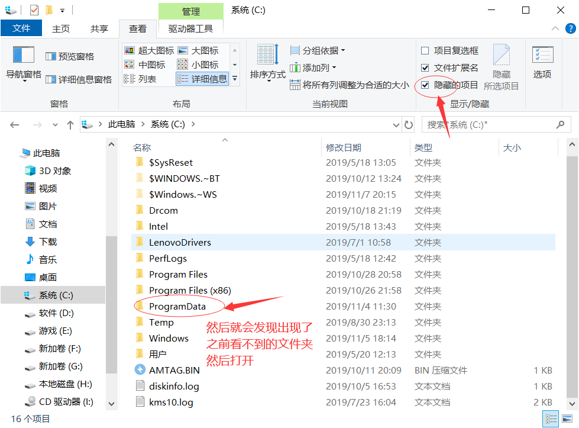
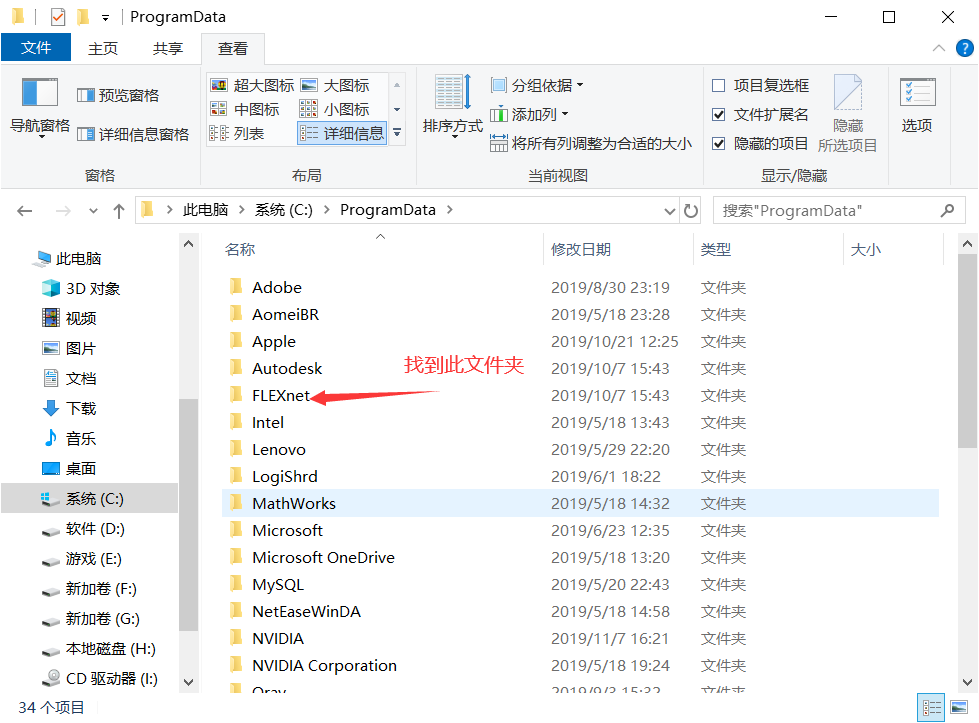

<!DOCTYPE html>
<html>
<head><meta name="generator" content="Hexo 3.9.0">
  <meta charset="utf-8">
  

  
  <title>CAD出现闪退的情况的解决方案 | 义修经验总结</title>
  <meta name="viewport" content="width=device-width, initial-scale=1, maximum-scale=1">
  <meta name="description" content="CAD出现闪退的情况的解决方案AutoCAD可能出现闪退的情况，本文给出一种解决方案本文作者：梅健">
<meta name="keywords" content="AutoCAD">
<meta property="og:type" content="article">
<meta property="og:title" content="CAD出现闪退的情况的解决方案">
<meta property="og:url" content="http://help.cqjtuJX.club/2019/11/08/CAD出现闪退的情况的解决方案/index.html">
<meta property="og:site_name" content="义修经验总结">
<meta property="og:description" content="CAD出现闪退的情况的解决方案AutoCAD可能出现闪退的情况，本文给出一种解决方案本文作者：梅健">
<meta property="og:locale" content="zh-cn">
<meta property="og:image" content="http://help.cqjtujx.club/2019/11/08/CAD出现闪退的情况的解决方案/CAD_(1).png">
<meta property="og:image" content="http://help.cqjtujx.club/2019/11/08/CAD出现闪退的情况的解决方案/CAD_(2).png">
<meta property="og:image" content="http://help.cqjtujx.club/2019/11/08/CAD出现闪退的情况的解决方案/CAD_(3).png">
<meta property="og:image" content="http://help.cqjtujx.club/2019/11/08/CAD出现闪退的情况的解决方案/CAD_(4).png">
<meta property="og:image" content="http://help.cqjtujx.club/2019/11/08/CAD出现闪退的情况的解决方案/CAD_(5).png">
<meta property="og:image" content="http://help.cqjtujx.club/2019/11/08/CAD出现闪退的情况的解决方案/CAD_(6).png">
<meta property="og:image" content="http://help.cqjtujx.club/2019/11/08/CAD出现闪退的情况的解决方案/CAD_(7).png">
<meta property="og:image" content="http://help.cqjtujx.club/2019/11/08/CAD出现闪退的情况的解决方案/CAD_(8).png">
<meta property="og:updated_time" content="2019-11-08T12:48:17.495Z">
<meta name="twitter:card" content="summary">
<meta name="twitter:title" content="CAD出现闪退的情况的解决方案">
<meta name="twitter:description" content="CAD出现闪退的情况的解决方案AutoCAD可能出现闪退的情况，本文给出一种解决方案本文作者：梅健">
<meta name="twitter:image" content="http://help.cqjtujx.club/2019/11/08/CAD出现闪退的情况的解决方案/CAD_(1).png">
  
    <link rel="alternate" href="/atom.xml" title="义修经验总结" type="application/atom+xml">
  
  
    <link rel="icon" href="/favicon.png">
  
  
    <link href="//fonts.lug.ustc.edu.cn/css?family=Source+Code+Pro" rel="stylesheet" type="text/css">
  
  <link rel="stylesheet" href="/css/style.css">
</head>
</html>
<body>
  <div id="container">
    <div id="wrap">
      <header id="header">
    <div id="banner"></div>
    <div id="header-outer" class="outer">
        <div id="header-title" class="inner">
            <h1 id="logo-wrap">
                <a href="/" id="logo">
                    义修经验总结
                </a>
            </h1>
            
                <h2 id="subtitle-wrap">
                    <a href="/" id="subtitle">
                        计算机协会
                    </a>
                </h2>
                
        </div>
        <div id="header-inner" class="inner">
            <nav id="main-nav">
                <a id="main-nav-toggle" class="nav-icon"></a>
                
                    <a class="main-nav-link" href="/">
                        首页
                    </a>
                    
                    <a class="main-nav-link" href="/archives">
                        存档
                    </a>
                    
            </nav>
            <nav id="sub-nav">
                
                    <a id="nav-rss-link" class="nav-icon" href="/atom.xml" title="RSS Feed"></a>
                    
                        <a id="nav-search-btn" class="nav-icon" title="Search"></a>
            </nav>
            <div id="search-form-wrap">
                <form action="//google.com/search" method="get" accept-charset="UTF-8" class="search-form"><input type="search" name="q" class="search-form-input" placeholder="Search"><button type="submit" class="search-form-submit">&#xF002;</button><input type="hidden" name="sitesearch" value="http://help.cqjtuJX.club"></form>
            </div>
        </div>
    </div>
</header>
      <div class="outer">
        <section id="main"><article id="post-CAD出现闪退的情况的解决方案" class="article article-type-post" itemscope itemprop="blogPost">
  <div class="article-meta">
    <a href="/2019/11/08/CAD出现闪退的情况的解决方案/" class="article-date">
  <time datetime="2019-11-08T12:43:54.000Z" itemprop="datePublished">2019-11-08</time>
</a>
    
  </div>
  <div class="article-inner">
    
    
      <header class="article-header">
        
  
    <h1 class="article-title" itemprop="name">
      CAD出现闪退的情况的解决方案
    </h1>
  

      </header>
    
    <div class="article-entry" itemprop="articleBody">
      
        <p>CAD出现闪退的情况的解决方案<br>AutoCAD可能出现闪退的情况，本文给出一种解决方案<br>本文作者：梅健</p>
<a id="more"></a>
<hr>

<p>部分同学可能会遇到CAD安装完成后出现闪退，这种情况可能是由于CAD激活过程没有完善。以下解决方案（注：本方案仅供参考，可能部分电脑不会有效）</p>
<h2 id="第一步："><a href="#第一步：" class="headerlink" title="第一步："></a>第一步：</h2><p>键盘上“win键”+R打开“运行”，<br>输入<strong>regedit</strong>，按下回车(Enter)打开<strong>注册表编辑器</strong>。<br><br>进入注册表编辑器后找到以下文件夹<br><br>然后找到以下文件夹<br><br><br>然后找到找到以7D2F开头的键值,这里有两个都得删除（CAD2010版本的cad都是7D2F开头的文件可能其他版本的不同需要自行百度查找）</p>
<h2 id="第二步："><a href="#第二步：" class="headerlink" title="第二步："></a>第二步：</h2><p>打开c盘中的programdata（可能有的人的电脑不能看见这个文件需要打开隐藏文件选项，打开方式如下）<br><br><br><br>打开programdata后找到FLEXnet（如下图），打开后删除里面所有的文件，然后重新启动CAD，之后CAD需要重新破解，具体破解方式可参考这篇文章（<a href="http://help.cqjtujx.club/2019/08/17/%E5%AE%89%E8%A3%85AutoCAD%E7%AE%80%E6%98%8E%E6%95%99%E7%A8%8B/">点击打开链接</a>）<br></p>
<hr>

<p><a href="https://github.com/cqjtu-acm/help/issues" target="_blank" rel="noopener">文章纠错</a> | 看不懂 | 投稿 | 提建议：477897024 (QQ群)</p>

      
    </div>
    <footer class="article-footer">
      <a data-url="http://help.cqjtuJX.club/2019/11/08/CAD出现闪退的情况的解决方案/" data-id="ck6g5adeh0003tcwu7k7dw76q" class="article-share-link">Share</a>
      
      
  <ul class="article-tag-list"><li class="article-tag-list-item"><a class="article-tag-list-link" href="/tags/AutoCAD/">AutoCAD</a></li></ul>

    </footer>
  </div>
  
    
<nav id="article-nav">
  
  
    <a href="/2019/10/01/Windows10-开机黑屏情况的几种常见处理方法/" id="article-nav-older" class="article-nav-link-wrap">
      <strong class="article-nav-caption">Older</strong>
      <div class="article-nav-title">Windows10 开机黑屏情况的几种常见处理方法</div>
    </a>
  
</nav>

  
</article>

</section>
        
          <aside id="sidebar">
  
    

  
    
  <div class="widget-wrap">
    <h3 class="widget-title">Tags</h3>
    <div class="widget">
      <ul class="tag-list"><li class="tag-list-item"><a class="tag-list-link" href="/tags/AutoCAD/">AutoCAD</a></li><li class="tag-list-item"><a class="tag-list-link" href="/tags/系统问题/">系统问题</a></li><li class="tag-list-item"><a class="tag-list-link" href="/tags/软件安装/">软件安装</a></li></ul>
    </div>
  </div>


  
    
  <div class="widget-wrap">
    <h3 class="widget-title">Tag Cloud</h3>
    <div class="widget tagcloud">
      <a href="/tags/AutoCAD/" style="font-size: 10px;">AutoCAD</a> <a href="/tags/系统问题/" style="font-size: 10px;">系统问题</a> <a href="/tags/软件安装/" style="font-size: 20px;">软件安装</a>
    </div>
  </div>

  
    
  <div class="widget-wrap">
    <h3 class="widget-title">Archives</h3>
    <div class="widget">
      <ul class="archive-list"><li class="archive-list-item"><a class="archive-list-link" href="/archives/2019/11/">十一月 2019</a></li><li class="archive-list-item"><a class="archive-list-link" href="/archives/2019/10/">十月 2019</a></li><li class="archive-list-item"><a class="archive-list-link" href="/archives/2019/09/">九月 2019</a></li><li class="archive-list-item"><a class="archive-list-link" href="/archives/2019/08/">八月 2019</a></li></ul>
    </div>
  </div>


  
    
  <div class="widget-wrap">
    <h3 class="widget-title">Recent Posts</h3>
    <div class="widget">
      <ul>
        
          <li>
            <a href="/2019/11/08/CAD出现闪退的情况的解决方案/">CAD出现闪退的情况的解决方案</a>
          </li>
        
          <li>
            <a href="/2019/10/01/Windows10-开机黑屏情况的几种常见处理方法/">Windows10 开机黑屏情况的几种常见处理方法</a>
          </li>
        
          <li>
            <a href="/2019/09/05/office-2010-2016-校园网下载地址收集整理/">office 2016 2010 校园网下载地址收集整理</a>
          </li>
        
          <li>
            <a href="/2019/08/31/Adobe-Premiere-CC-2019-下载地址/">Adobe Premiere Pro CC 2019 下载地址</a>
          </li>
        
          <li>
            <a href="/2019/08/31/Win10恢复出厂设置后鼠标一直转圈圈解决方案/">Win10恢复出厂设置后鼠标一直转圈圈解决方案</a>
          </li>
        
      </ul>
    </div>
  </div>

  
</aside>
        
      </div>
      <footer id="footer">
  
  <div class="outer">
    <div id="footer-info" class="inner">
      &copy; 2020 计算机协会<br>
      Powered by <a href="http://hexo.io/" target="_blank">Hexo</a>
      <br>
      <a href="http://www.beian.miit.gov.cn/" target="_blank">渝ICP备19007745号</a>
    </div>
  </div>
</footer>
    </div>
    <nav id="mobile-nav">
  
    <a href="/" class="mobile-nav-link">首页</a>
  
    <a href="/archives" class="mobile-nav-link">存档</a>
  
</nav>
    

<script src="https://cdn.bootcss.com/jquery/2.0.3/jquery.min.js"></script>


  <link rel="stylesheet" href="/fancybox/jquery.fancybox.css">
  <script src="/fancybox/jquery.fancybox.pack.js"></script>


<script src="/js/script.js"></script>


  </div>
</body>
</html>